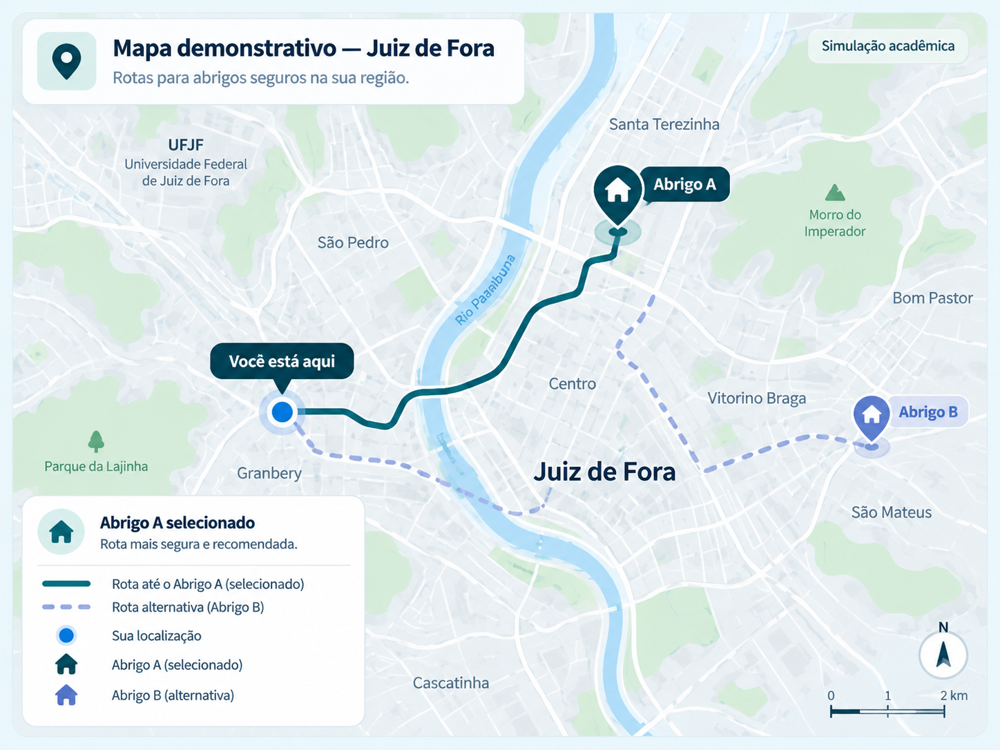

Dashboard do Morador
Consulte alertas e encontre locais seguros.
Alerta da região
Consulte as informações de segurança da sua região.
Abrigos seguros
Selecione um abrigo para visualizar a rota.
Abrigo A — Ponto de apoio demonstrativo. Rota A selecionada.

Simulação acadêmica: rotas e abrigos ilustrativos, não validados pela Defesa Civil.